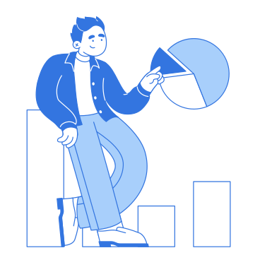
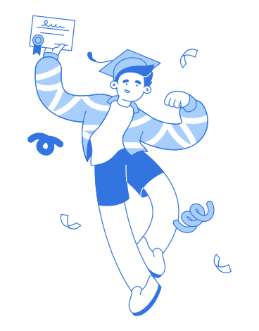

Pasjonat specjalizujący się w aplikacjach na platformę Windows, koncentrujący się na automatyzacji procesów i zwiększaniu wydajności operacyjnej.
Adam Czarnowski
🚀 ERP Developer & Consultant 🚀
Cześć, jestem Adam! 👋
Na dzień dzisiejszy mam 25 lat i robię rzeczy na komputerze. Będąc dokładnym programuję, wdrażam i analizuję dane. 📊
Moja determinacja i szybkość uczenia się pozwalają mi z powodzeniem rozwiązywać problemy i dostosowywać się do nowych sytuacji. 💪🏻
Zawsze gotowy na nowe wyzwania, szukam możliwości rozwoju zawodowego i wykorzystania swoich umiejętności w praktyce. 🔬

Hover over me!

Hover over me!
Specjalizuje się w tworzeniu oprogramowania desktopowego. Projektowanie interfejsu użytkownika, obsługę logiki aplikacji i integrację systemów baz danych. Hobbystycznie tworzę gry komputerowe.

Hover over me!
Programista systemów ERP specjalizujący się w skryptach Groovy wspierających przepływy pracy związane z finansami, magazynem, logistyką i zaopatrzeniem.

Hover over me!
Sprawność w obsłudze dużych zbiorów danych. Potrafię tworzyć, modyfikować i optymalizować zapytania, a także skutecznie diagnozować i rozwiązywać problemy.

💾 Moje projekty 💾
Witaj w sekcji moich projektów, gdzie prezentuję kolekcję moich prac i kreatywnych przedsięwzięć. 📚
Każdy projekt opowiada jakąś historię. Tutaj zebrałem te, które ukształtowały moją podróż jako programisty. Od początkowych iskier inspiracji do ostatecznych rezultatów, prace te odzwierciedlają mój rozwój, poświęcenie i ciągłą naukę. 📈
Poznaj moją podróż przez te projekty i dowiedz się, jak przekształcam pomysły w funkcjonalną rzeczywistość. ✨
-
Wizualizacja rozwiązywania TSP
Metody dokładne i metaheurystyczne dla problemu Traveling Salesman Problem (TSP). W badaniu zaimplementowano i przetestowano te metody na różnych instancjach TSP oraz porównano ich jakość rozwiązań i wydajność obliczeniową.

-
SoulCollector
Algorytmy sztucznej inteligencji losowo generujące mapę rozgrywki, kontrolujące postacie niezależne i przeciwników, których głównym celem jest jak najdłuższe przetrwanie i doprowadzenie postaci gracza do porażki.
-
Klasyfikator dźwięku kroków
Program do analizy odgłosów kroków moich i mojego współlokatora. Program zwrócił powiadomienie o możliwej niepożądanej osobie w domu.
-
System ekspercki diagnostyki chorób układu pokarmowego
W formie aplikacji desktopowej jako program pomagający lekarzom w diagnozowaniu chorób pacjentów za pomocą ankiet objawowych.
-
Snake The Game
Jest to zaawansowana forma tradycyjnej gry Snake - zawiera przeszkody, drugiego Snake'a granego przez AI i żabę AI.
-
Resizer
Resizer to prosty skrypt do zmiany rozmiaru wielu obrazów i tworzenia ich obróconych [0, 90, 180, 270] kopii. Skrypt został napisany na potrzeby wykładu jako standaryzacja etykietowania obrazów.
-
Kohonen Iris
Implementacja i opis samoorganizującej się mapy Kohonena z wykorzystaniem zbioru danych Iris do wykładu sieci neuronowych.
-
TicTacToeAI
Program zawiera grę TTT z możliwością zmiany rozmiaru planszy (min. rozmiar=3x3, maks. rozmiar=10x10) i zmiennym warunkiem wygranej zależnym od rozmiaru planszy (min. warunek 3 w linii, maks. warunek 10 w linii).

Stopień magisterski
2022 - 2023
Politechnika Wrocławska
Wydział informatyki i telekomunikacji
Kierunek Informatyka techniczna
Specjalizacja Informatyczne systemy automatyki
Stopień inżynierski
2018 - 2022
Politechnika Wrocławska
Wydział Elektroniki, Fotoniki i Mikrosystemów
Automatyka i robotyka
Specjalizacja Systemy informatyczne w automatyce

Streamsoft
06.2024 - obecnie
ERP Developer & Consultant
Rozwój systemu ERP Verto.
Tworzenie skryptów klienckich i serwerowych.
Utrzymanie systemu baz danych i tworzenie logicznych diagramów encji.
Analiza i projektowanie elementów systemu.
Obsługa dokumentów logistycznych, magazynowych, sprzedażowych, transportowych i zaopatrzeniowych.
Interakcja z klientami w celu określenia potrzeb w oparciu o specyfikę firmy.
Prowadzenie szkoleń dla firm w zakresie programowania komponentów systemu.
Biuro Rachunkowe Capri Magdalena Patyk
02.2023 - 06.2024
Python Developer & IT Specialist
Tworzenie oprogramowania do automatyzacji, wyodrębniania danych z faktur, generowania raportów i umów.
Wdrożenie programu generującego analizy finansowe i wykresy prognoz.
Prowadzenie baz danych klientów.
Aktualizacja systemu i oprogramowania oraz konfiguracja nowo zakupionego sprzętu.
Korepetytor programowania
08.2022 - 02.2023
Spersonalizowane lekcje programowania w języku Python dla młodzieży, studentów i dorosłych.
Tworzenie niestandardowych zadań i projektów.
Nokia Wrocław
08.2021 - 08.2022
Python Developer
Wdrożenie skryptów Python w celu automatyzacji przepływu pracy pracowników.
Automatyzacja testowania odbiorników i anten o różnych częstotliwościach przy użyciu Robot Framework i Jenkins.
Przetwarzanie dużych zbiorów danych tekstowych przy użyciu formatu wymiany danych JSON.
Polski
Natywny
Pełna biegłość, z głębokim zrozumieniem wyrażeń idiomatycznych, odniesień kulturowych i profesjonalnej terminologii.
Angielski
Poziom C1
Umiejętność rozumienia i tworzenia złożonych tekstów oraz angażowania się w szczegółowe dyskusje na różne tematy. Wykazuje zaawansowaną znajomość gramatyki i słownictwa, umożliwiając skuteczną komunikację zarówno w środowisku zawodowym, jak i społecznym.

Niemiecki
Poziom A2
Radzę sobie z prostymi i rutynowymi zadaniami, które wymagają bezpośredniej wymiany informacji na znane mi tematy. Jestem w stanie zrozumieć i używać podstawowych wyrażeń i zwrotów związanych z codziennymi potrzebami i potrafię komunikować się w prostych, rutynowych sytuacjach.
Włoski
Poziom A1
Rozumienie podstawowych zwrotów i prostych zdań. Potrafię się przedstawić, zadawać proste pytania i odpowiadać na nie, a także rozumieć znane nazwy i codzienne wyrażenia.
Języki programowania
Python
Java
Groovy
C#
JavaScript
Języki znaczników
HTML CSS
XML
TeX
Bazy danych
SQL
PostgreSQL
Microsoft SQL Server
SQLite
Języki wymiany danych
JSON
XML
CSV
Oprogramowania
Jenkins
Jira
Confluence
Git
MS Office
DBeaver
Microsoft SQL Server
Kompetencje zawodowe
Umiejętność pracy z dokumentacją techniczną
Analityczne i logiczne myślenie
Konsekwentność
Kreatywność
Wysokie umiejętności komunikacyjne
Gracz zespołowy
Bardzo dobra organizacja czasu
Prawo jazdy kat. B
Technologia
Jestem zafascynowany najnowszymi osiągnięciami technologicznymi i tym, jak zmieniają one nasz świat. Od najnowocześniejszych gadżetów po innowacyjne rozwiązania programowe, uwielbiam odkrywać i rozumieć, jak działają te technologie i ich potencjalny wpływ na nasze codzienne życie.

Kulinaria
Mam głęboką pasję do odkrywania różnorodnych kuchni i opanowania technik gotowania z całego świata. Moja wiedza obejmuje zarówno tworzenie skomplikowanych potraw, jak i zrozumienie nauki stojącej za kombinacjami smaków i interakcjami składników.
Podróże
Fascynuję się odkrywaniem nowych miejsc i zanurzaniem się w różnych kulturach. Moje podróże poszerzyły moją perspektywę, wzbogaciły moje rozumienie świata i pozwoliły mi nawiązać kontakt z ludźmi z różnych środowisk.

Muzyka
Muzyka zawsze była dla mnie źródłem inspiracji i kreatywności. Niezależnie od tego, czy odkrywam nowych artystów, czy style, znajduję radość w odkrywaniu różnych gatunków i pogłębianiu mojego zrozumienia dźwięku i rytmu.
Aktywności fizyczne
Pasjonuję się aktywnością fizyczną, lubię chodzić na siłownię, pływać i jeździć na longboardzie, aby uzyskać ekscytującą mieszankę siły i wytrzymałości. Uwielbiam również jazdę na nartach, która oferuje zarówno ekscytujące wyzwanie, jak i sposób na cieszenie się naturą.